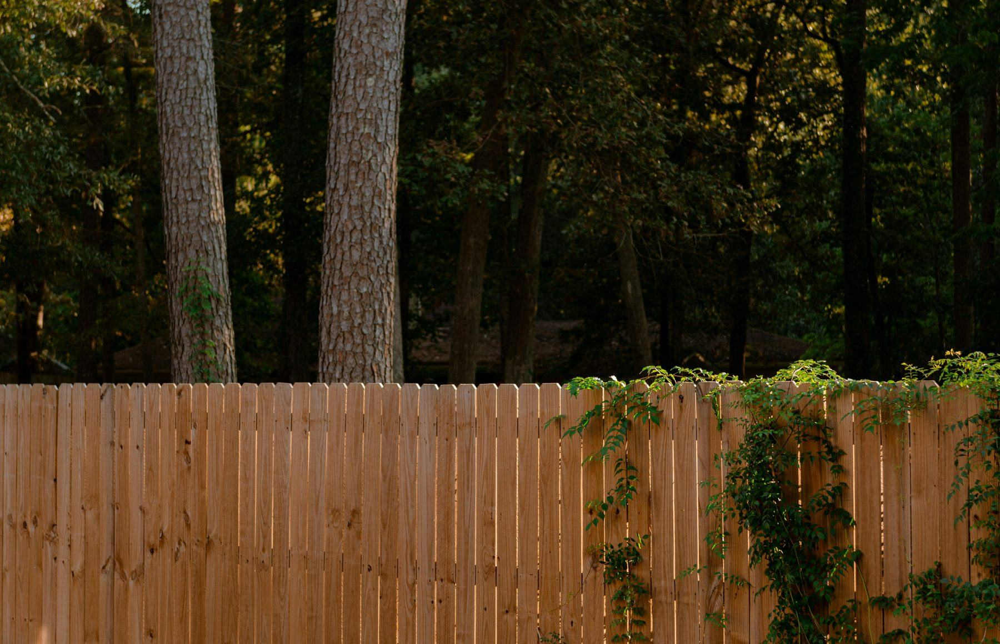
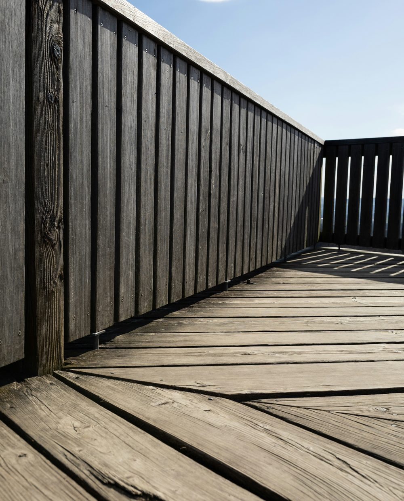
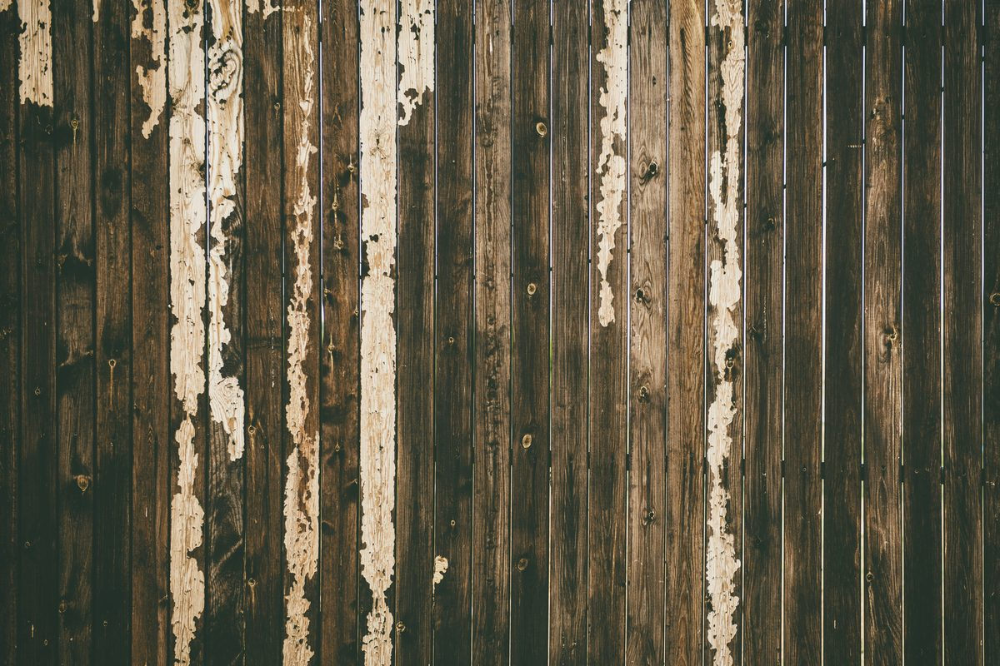
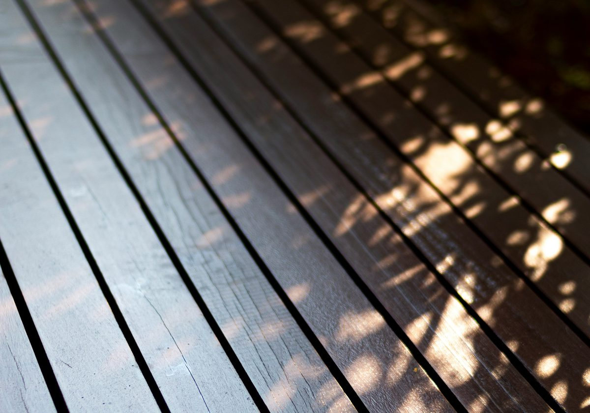

Home / Deck & Fence Staining
Deck & Fence Staining, Sealing & Painting in Western Kentucky & Tennessee
Deck and fence cleaning, staining, sealing and painting. Cleaned and brightened first, then sealed — so water runs off the wood instead of soaking into it.
A gray deck isn’t a style choice — it’s the surface fibers giving up. Unsealed wood takes on water every time it rains, swells, dries, shrinks, and splits a little more each cycle. Do that for enough Kentucky and Tennessee summers and the boards go soft, cup, and start throwing splinters.
The good news is that gray is usually only about a millimeter deep. Underneath it, the wood is generally fine — and it can be brought back.
What we work on
- Deck staining and sealing — including railings, steps and spindles
- Deck painting — where the wood is past the point of showing grain
- Fence staining and sealing — privacy fence, picket, split rail, farm fence
- Fence painting — including the long runs nobody wants to do by hand



Stain or paint?
Short version: stain if the wood is worth looking at, paint if it isn’t.
Stain soaks in, keeps the grain visible, and when it wears it fades rather than peeling — so the next round is a clean-and-recoat, not a strip-back. Paint sits on the surface, hides everything, gives you any color you want, and lasts longer up front — but when it eventually fails, it fails by peeling, and that’s a much bigger job to put right.
For decks that get walked on and rained on, stain is usually the sane answer. For a fence you want to match the trim on the house, paint often wins. We’ll give you a straight recommendation for your wood rather than whatever’s easier for us.
Why this isn’t just “painting the deck”
Stain doesn’t sit on top of wood the way paint sits on siding — it has to soak in. Which means everything about whether it works is decided before the stain comes out:
- It has to be clean. Stain over mildew seals the mildew in and it keeps growing underneath.
- It has to be brightened. Cleaning wood raises the pH and darkens it. A brightener neutralizes that back and reopens the grain so the stain can actually penetrate.
- It has to be dry. Genuinely dry — not “it looks dry.” Stain over damp wood goes blotchy and lifts.
- It has to be the right product. A deck you walk on and a fence you look at have completely different jobs to do.
Skip any of those and you get a finish that looks great for one season and peels off in sheets the next — which is worse than doing nothing, because now it has to come off before anything else can go on.
How we do it
- 01Assess the wood
First we work out whether you need a finish or a carpenter. If boards are rotten, staining them is a waste of your money and we’ll say so.
- 02Clean
Low pressure and the right solution. High pressure on a deck carves the soft grain out from between the hard rings and leaves it furry.
- 03Brighten and dry
Neutralize, open the grain, then wait. This is the step that gets skipped when someone’s trying to do your deck in a day.
- 04Stain, seal or paint
Applied and worked in properly, so it penetrates evenly instead of pooling and going patchy.
Where we work
Murray, Mayfield, Paducah, Benton, Fancy Farm, Arlington, Symsonia, Hickory, Wingo, Sedalia, Lowes, and the rest of Graves, Calloway, Marshall, McCracken and Carlisle counties.
Next step
Get the wood sealed before another summer at it.
Tell us what you’ve got and we’ll come look. Free estimate, written down, no obligation.